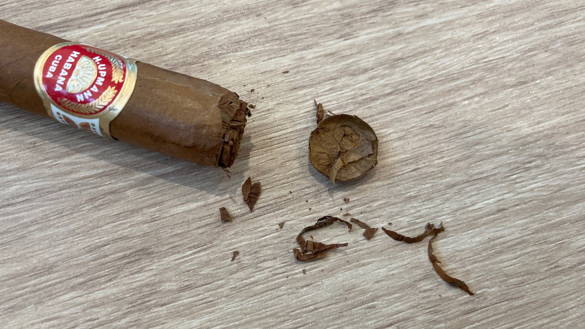

Cigar Review: H. Upmann Majestic
This is such a lovely cigar! It tasted very much like Half Corona. I was so hesitated to pick this up at the store because it looks slightly moldy, but I'm so glad that I did. ❤
The construction of the cigar is probably just ok? There are some visible white veins and the wrapper is a not consistent brown throughout. The cigar is at a length of 14cm and 40 ring gauge. It's a pretty packed solid small stick.
I had some trouble cutting this one though. I think it's probably packed too tight that my cutter just wasn't able cut it through. It could also be something's wrong with my cutter too. Anyways, I had to use a lot of strength to remove the cap. A second attempt to cut off the top part so that it's smooth.

It started out with lots of cocoa, coffee flavour. So creamy sweet smooth and enjoyable. The sweet flavour continued towards mid-body, still honey sweet. It is just my favourite flavour. No sharpness or any bitterness until pretty much the last third! The draw, however, is extremely tight. I had pull air really hard to keep the cigar lit. The flavour is great otherwise.
I can't really comment on the burn because I was outside and the wind was blowing in all different direction. The cigar either fixed it the burn line by itself whenever the line is not straight, or I corrected pretty much immediately when it grew too crooked. The ash can grow pretty good though!
Smoke time for me was about 40 min. I ended it again slightly earlier when I started to taste no flavour and had light spice and bitterness. It was getting quite late too and I was in front of a construction site. I thought I was overheating towards the end of my cigar, but on a second though, it could just well be the flavour of third section.
When I tried to put it out, it had a rush of weird sour acid smell that was just horrible. Just slightly caught me off guard because it never really had this smell when I put a cigar out and I thought this is a sweet cocoa cigar. 😅
Overall, I think it a pretty nice cigar. The draw is too tight for me, but I enjoy the flavour and the time with this cigar. I think I prefer half corona slightly over this one still, but this one is pretty good too.
Thanks for reading. If you find this post interesting, please consider supporting this website and allow me to share more with you. Have a wonderful day now!